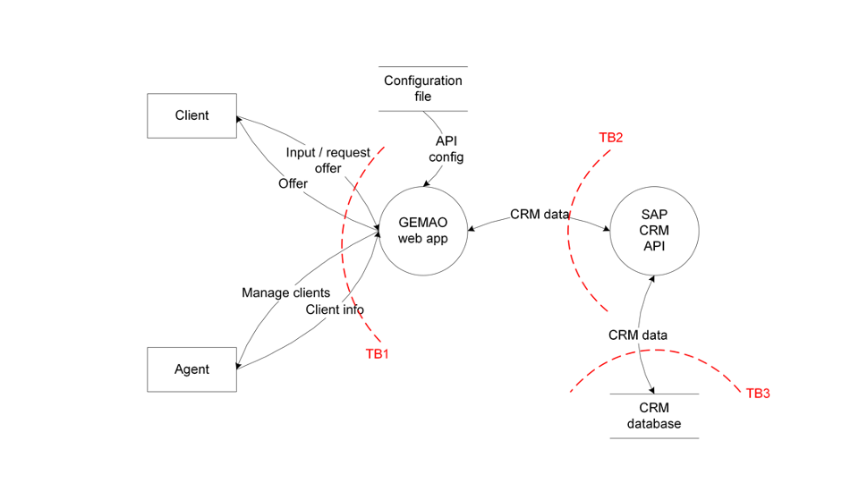

Andreas Happe
Suboptimal:
Zwar keine Ahnung wohin, aber Hauptsache schnell!!!1
Strukturierte Herangehensweise an Sicherheitsbetrachtung

Auf diese Weise sollten die Schwachstellen überhaupt nicht im Softwareprodukt “aufschlagen”.